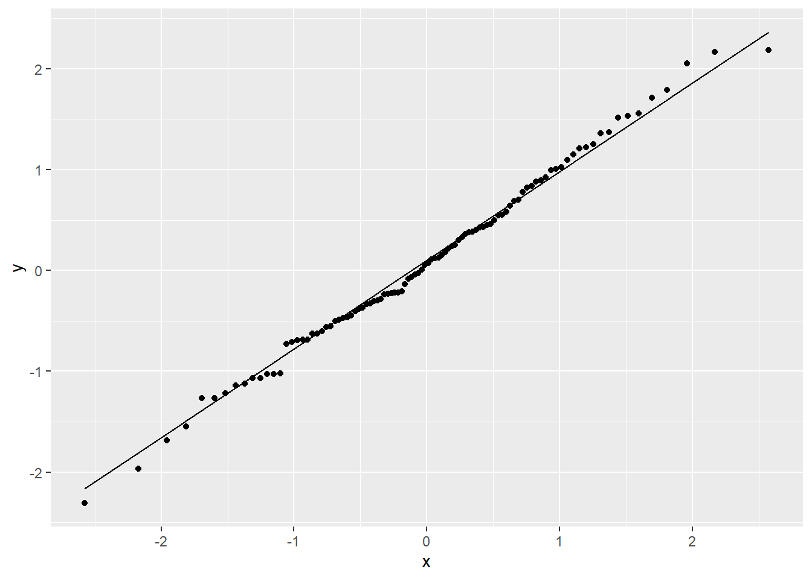
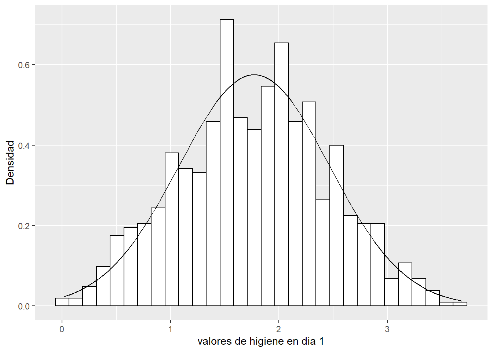
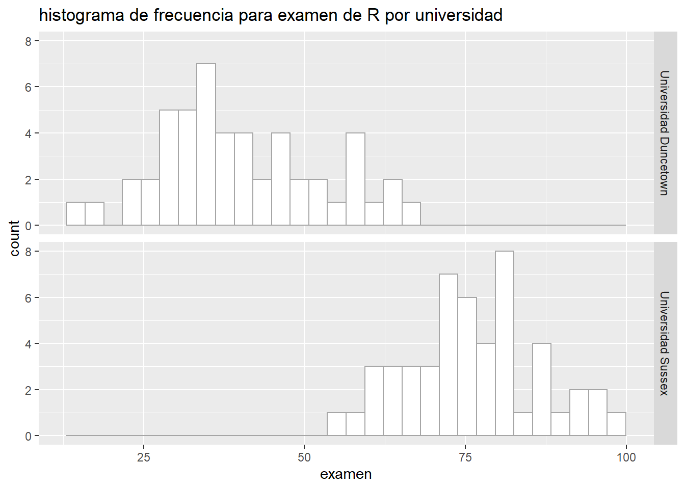

Last updated: 2021-06-16
Checks: 7 0
Knit directory: 2021/
This reproducible R Markdown analysis was created with workflowr (version 1.6.2). The Checks tab describes the reproducibility checks that were applied when the results were created. The Past versions tab lists the development history.
Great! Since the R Markdown file has been committed to the Git repository, you know the exact version of the code that produced these results.
Great job! The global environment was empty. Objects defined in the global environment can affect the analysis in your R Markdown file in unknown ways. For reproduciblity it’s best to always run the code in an empty environment.
The command set.seed(20210412) was run prior to running the code in the R Markdown file. Setting a seed ensures that any results that rely on randomness, e.g. subsampling or permutations, are reproducible.
Great job! Recording the operating system, R version, and package versions is critical for reproducibility.
Nice! There were no cached chunks for this analysis, so you can be confident that you successfully produced the results during this run.
Great job! Using relative paths to the files within your workflowr project makes it easier to run your code on other machines.
Great! You are using Git for version control. Tracking code development and connecting the code version to the results is critical for reproducibility.
The results in this page were generated with repository version 28f09a5. See the Past versions tab to see a history of the changes made to the R Markdown and HTML files.
Note that you need to be careful to ensure that all relevant files for the analysis have been committed to Git prior to generating the results (you can use wflow_publish or wflow_git_commit). workflowr only checks the R Markdown file, but you know if there are other scripts or data files that it depends on. Below is the status of the Git repository when the results were generated:
Ignored files:
Ignored: .Rhistory
Ignored: .Rproj.user/
Untracked files:
Untracked: Curso_Bioestadistica_MTripp_cuatriII.docx
Untracked: Curso_Bioestadistica_MTripp_cuatriII.pdf
Untracked: Diapositivas/
Untracked: README.html
Untracked: Resources/
Untracked: analysis/Clase9_anova2vias.Rmd
Untracked: analysis/images/
Untracked: code/tarea_macrograd.R
Untracked: data/CS_subset.csv
Untracked: data/Consumo_oxigeno_wide.csv
Untracked: data/Darwin_esp.csv
Untracked: data/Data_enzimas_Experimento1.txt
Untracked: data/Data_enzimas_Experimento2.txt
Untracked: data/Data_enzimas_Experimento3.txt
Untracked: data/Data_enzimas_Experimento4.txt
Untracked: data/DownloadFestival(No Outlier).dat
Untracked: data/Festival.csv
Untracked: data/LungCapData.txt
Untracked: data/LungCapDataEsp.csv
Untracked: data/RExam.dat
Untracked: data/Rexamendat.csv
Untracked: data/Tabla1_Muestreo.txt
Untracked: data/Transcriptome_Anotacion.csv
Untracked: data/Transcriptome_DGE.csv
Untracked: data/Vinogradov_2004_Titanic.tab
Untracked: data/Vinogradov_2004_Titanic.tab.csv
Untracked: data/data_tukey.txt
Untracked: data/datasets_Pokemon.csv
Untracked: data/datasets_Pokemon.xls
Untracked: data/exp_macrogard_growth.tab
Untracked: data/exp_macrogard_rna-dna.tab
Untracked: data/macrogard_crecimiento.csv
Untracked: data/penguins_size.csv
Untracked: data/pokemon_extended.csv
Untracked: output/Plot_all_penguins.pdf
Untracked: output/Plot_all_penguins.tiff
Untracked: output/graficos/
Note that any generated files, e.g. HTML, png, CSS, etc., are not included in this status report because it is ok for generated content to have uncommitted changes.
These are the previous versions of the repository in which changes were made to the R Markdown (analysis/Clase6_Supuestos.Rmd) and HTML (docs/Clase6_Supuestos.html) files. If you’ve configured a remote Git repository (see ?wflow_git_remote), click on the hyperlinks in the table below to view the files as they were in that past version.
| File | Version | Author | Date | Message |
|---|---|---|---|---|
| html | c5dfe6a | Miguel Tripp | 2021-06-14 | Build site. |
| html | 2352c47 | Miguel Tripp | 2021-06-12 | Build site. |
| html | 99c3644 | Miguel Tripp | 2021-06-05 | Build site. |
| html | fbd7857 | Miguel Tripp | 2021-06-05 | Build site. |
| html | 87a646f | Miguel Tripp | 2021-06-02 | Build site. |
| html | 47a7147 | Miguel Tripp | 2021-05-31 | Build site. |
| Rmd | 3b99032 | Miguel Tripp | 2021-05-31 | Publish the initial files for myproject |
| html | 95c661f | Miguel Tripp | 2021-05-31 | Build site. |
| Rmd | d2189e1 | Miguel Tripp | 2021-05-31 | Publish the initial files for myproject |
| html | 34660de | Miguel Tripp | 2021-05-24 | Build site. |
| Rmd | 458bf8f | Miguel Tripp | 2021-05-24 | Publish the initial files for myproject |
| html | da04854 | Miguel Tripp | 2021-05-24 | Build site. |
| html | 3321935 | Miguel Tripp | 2021-05-24 | Build site. |
| Rmd | 4233f46 | Miguel Tripp | 2021-05-24 | Publish the initial files for myproject |
Muchos de los estadisticos que se abordan en el curso son pruebas paramétricas las cuales se basan en una distribución normal, es decir, que las muestras se hayan obtenido de una población distribución normal (Gausiana), por lo tanto, resulta de imortancía confirmar dicho supuesto antes de decidir que prueba estadistica es apropiada.
La mayoria de las pruebas paramétricas basadas en la distribución normal tienen cuatro supuestos que deben de cumplirse para que la prueba sea precisa:
Figura: WikiCommons
Con una cantidad de datos de la muestra suficientemente grande (n>30) la violación del supuesto de la normalidad no debería causar mayores problemas. Esto implica que podemos ignorar la distribución de los datos y usar pruebas paramétricas si estamos tratando con muestras de gran tamaño.
El teorema del límite central nos dice que sin importar el tipo de distribución que tengan las cosas, la distribución de la muestra tiende a ser normal si ésta es lo suficientemente grande (n>30).
Una de las formas en que podemos visualizar la distribución de los datos es mediante la generación de histogramas de frecuencia.
El histograma y el gráfico de densidad son herramientas muy útiles porque sirven para mostrar la distribución, la simetría, el sesgo, variabilidad, moda, mediana y observaciones atípicas de un conjunto de datos. Para explorar la normalidad de un conjunto de datos lo que se busca es que el histograma o gráfico de densidad presenten un patrón más o menos simétrico.
null device
1 Las siguientes gráficas muestran la distribución de frecuencias de valores esogidos al asar de una distribución normal con una media = 36.77 y una desviación estandar de 0.40. La variación entre gráfico y gráfico es simplemente el resultado de la variación aleatoria durante el muestreo.
Generar un gráfico Q-Q con R base
set.seed(123)
datos_norm <- rnorm(n = 100, mean = 0, sd = 1)
hist(datos_norm, breaks = 12)qqnorm(datos_norm)
qqline(datos_norm)Con ggplot
ggplot()+
geom_histogram(aes(datos_norm), col = "grey75", fill = "white", bins = 12)ggplot()+
geom_qq(aes(sample = datos_norm))+
geom_qq_line(aes(sample = datos_norm))
Los gráficos Q-Q tambien nos permiten inspeccionar la distribución de los datos. Los datos que muestren una asimetria positiva o negativa tambien se veran reflejados en la desviación de los puntos de los valores obsverados con respecto a la distribución teórica.
null device
1 ¿Por qué la distribución normal es central en la teoría estadistca? La distribución normal o Gaussiana juega un papel central en la estadística debido a la relación matemática conocida como el teorema del límite central. Este dice que si tu muestra es lo suficientemente grande, la distribución de las medias se aproximará a la distribución Gaussiana, aún si la población no es Gaussiana. Debido a que la mayoria de las pruebas estadisticas (como la t de Student o el análisis de varianzas) se centran solamente en las diferencias entre las medias, la teoría del limite central explica porque estas pruebas funcionan aún cuando la población no es Gaussiana.
Para evaluar el supuesto de normalidad, vamos a usar un set de datos obtenidos de un festival de música en el Reino Unido, en el cual se evaluó la higiene de los participantes durante los tres dias del festival utilizando una técnica estandarizada con un valor entre 4 (huele a rosas durante el rocio de la mañana) y 0 (huele a cuerpo putrefacto escondido en el traseso de un zorillo)(Andy Field)
festival_url <- "https://raw.githubusercontent.com/trippv/Miguel_Tripp/master/Festival.csv"
festival <- read_csv(festival_url)
head(festival)# A tibble: 6 x 5
numero genero dia1 dia2 dia3
<dbl> <chr> <dbl> <dbl> <dbl>
1 2111 Hombre 2.64 1.35 1.61
2 2229 Mujer 0.97 1.41 0.29
3 2338 Hombre 0.84 NA NA
4 2384 Mujer 3.03 NA NA
5 2401 Mujer 0.88 0.08 NA
6 2405 Hombre 0.85 NA NA Dibujamos el histograma con los valores de densidad
d1 <- ggplot(data = festival, aes(x = dia1))+
geom_histogram(aes(y = ..density..), color = "black", fill = "white")+
labs(x = "valores de higiene en dia 1", y = "Densidad")+
stat_function(fun = dnorm, args = list(mean = mean(festival$dia1, na.rm = TRUE),
sd = sd(festival$dia1, na.rm = TRUE)
))
d1`stat_bin()` using `bins = 30`. Pick better value with `binwidth`. La figura sugiere que los datos siguen una distribución normal. Ahora si gráficamos un QQplot
d1_qq <- ggplot(data = festival, aes(sample = dia1))+
geom_qq()+
geom_qq_line()
d1_qqLos datos se ajustan bastante a la diagonal.
Para explorar mas a fondo la distribución de los datos, es posible utilizar la funcion describe() dentro del paquete psych o la función stat.desc() del paquete pastecs.
recuerda que para instalar un paquete debes usar la función
install.package()
psych::describe(festival$dia1) vars n mean sd median trimmed mad min max range skew kurtosis se
X1 1 810 1.77 0.69 1.79 1.77 0.7 0.02 3.69 3.67 0 -0.42 0.02alternativamente:
#indicamos norm = T para desplegar estadisticos de normalidad
pastecs::stat.desc(festival$dia1, basic = FALSE, norm = TRUE) %>%
round(3) median mean SE.mean CI.mean.0.95 var std.dev
1.790 1.771 0.024 0.048 0.481 0.694
coef.var skewness skew.2SE kurtosis kurt.2SE normtest.W
0.392 -0.004 -0.026 -0.422 -1.228 0.996
normtest.p
0.032 Ejercicio 1: Usando ggplot y patchwork grafica el histograma de frecuencia con la distribución normal y los qqplots para cada unos de los dias del festival. Incluye el análisis con pastecs para cada grupo
library(patchwork)
#1. definir los histogramas
d1 <- ggplot(data = festival, aes(x = dia1))+
geom_histogram(aes(y = ..density..), color = "black", fill = "white")+
labs(x = "valores de higiene en dia 1", y = "Densidad")+
stat_function(fun = dnorm, args = list(mean = mean(festival$dia1, na.rm = TRUE),
sd = sd(festival$dia1, na.rm = TRUE)
))
d2 <- ggplot(data = festival, aes(x = dia2))+
geom_histogram(aes(y = ..density..), color = "black", fill = "white")+
labs(x = "valores de higiene en dia 2", y = "Densidad")+
stat_function(fun = dnorm, args = list(mean = mean(festival$dia3, na.rm = TRUE),
sd = sd(festival$dia3, na.rm = TRUE)
))
d3 <- ggplot(data = festival, aes(x = dia3))+
geom_histogram(aes(y = ..density..), color = "black", fill = "white")+
labs(x = "valores de higiene en dia 2", y = "Densidad")+
stat_function(fun = dnorm, args = list(mean = mean(festival$dia3, na.rm = TRUE),
sd = sd(festival$dia3, na.rm = TRUE)
))
# definir los qq
d2_qq <- ggplot(data = festival, aes(sample = dia2))+
geom_qq()+
geom_qq_line()
d3_qq <- ggplot(data = festival, aes(sample = dia3))+
geom_qq()+
geom_qq_line()
# combinar con pathchwor
(d1 + d1_qq) / (d2 + d2_qq) / (d3 + d3_qq)pastec_res <- pastecs::stat.desc(festival[, c("dia1", "dia2","dia3")], basic = TRUE, norm = TRUE) %>%
round(., 3)Los gráficos, asi como los valores de asimetría y curtosis sugieren que la higiene de los asistentes del festival se deteriora notablemente con el paso de los días.
Otra forma de evaluar el supuesto de normalidad de los datos es mediante una prueba que nos indique si la distribución de los datos se desvia de una distribución normal.
Como el resto de tests que analizan la normalidad, se considera como hipótesis nula que los datos sí proceden de una distribución normal, la hipótesis alternativa que no lo hacen.
El valor p de estos test indica la probabilidad de obtener una distribución como la observada si los datos realmente proceden de una población con una distribución normal.
Sin embargo, es importante tomar que cuenta que esta prueba tiene sus limitaciones, ya que con tamaños de muestra grandes es fácil tener valores singificativos de pequeñas desviaciones de la normalidad, por lo que una prueba significativa no necesariamente nos indica si la desviación de la normalidad es lo suficientemente grande como para sesgar los resultados de una prueba estadística.
La prueba de Shapiro-Wilk esta incluida dentro de los resultados de stat.desc() pero tambien es posible aplicarla usando la función shapiro.test()
# Prueba shapiro dia1
shapiro.test(festival$dia1)
Shapiro-Wilk normality test
data: festival$dia1
W = 0.99592, p-value = 0.03198# Prueba shapiro dia2
shapiro.test(festival$dia2)
Shapiro-Wilk normality test
data: festival$dia2
W = 0.90832, p-value = 1.282e-11# Prueba shapiro dia3
shapiro.test(festival$dia3)
Shapiro-Wilk normality test
data: festival$dia3
W = 0.90775, p-value = 3.804e-07Este test se emplea para contrastar normalidad cuando el tamaño de la muestra es relativamente grande (>50 [30]).
Es importante cnsiderar que la prueba de Kolmogorov-Smirnov asume que se conocen la media y varianza poblacional, lo que en la mayoría de los casos no es posible. Esto hace que el test sea muy conservador y poco potente. Para solventar este problema se desarrolló una modificación del Kolmogorov-Smirnov conocida como test Lilliefors. El test Lilliefors asume que la media y varianza son desconocidas, estando especialmente desarrollado para testar la normalidad.
ks.test(festival$dia1, y = "pnorm", mean=mean(festival$dia1), sd=sd(festival$dia1))Warning in ks.test(festival$dia1, y = "pnorm", mean = mean(festival$dia1), :
ties should not be present for the Kolmogorov-Smirnov test
One-sample Kolmogorov-Smirnov test
data: festival$dia1
D = 0.029298, p-value = 0.4902
alternative hypothesis: two-sidedPara poder usar la prueba de Lilliefors es necesario instalar el paquete nortest
#install.packages("nortest")
nortest::lillie.test(festival$dia1)
Lilliefors (Kolmogorov-Smirnov) normality test
data: festival$dia1
D = 0.029298, p-value = 0.09694El supuesto de homogeneidad de varianzas, también conocido como supuesto de homocedasticidad, considera que la varianza es constante (no varía) en los diferentes niveles de un factor, es decir, entre diferentes grupos.
Existen diferentes test que permiten evaluar la distribución de la varianza. Todos ellos consideran como hipótesis nula que la varianza es igual entre los grupos y como hipótesis alternativa que no lo es. La diferencia entre ellos es el estadístico de centralidad que utilizan.
La prueba de Levene es una prueba simple que trabaja realizando una ANOVA de una via sobre los valores de desvicación; es decir, la diferecia absoluta entre cada valor y la media del grupo del que viene.
Para utilizar esta prueba es necesario instalar el paquete car y usar la funcion leveneTest()
La prueba LeveneTest se caracteriza ademas por permitir elegir entre diferentes estadísticos de centralidad :mediana (por defecto), media, media truncada. Esto es importante a la hora de contrastar la homocedasticidad dependiendo de si los grupos se distribuyen de forma normal o no.
Nota: es importante considerar que necesitamos valores agrupados.
Para este ejercicio, trabajaremos los datos Rexamendat los cuales contienen los resultados de un examen de R conducido en dos universidades
Aplicamos la prueba de Levene sobre los valores del examen y aritmetica (numeracy)
Rexam_url <- "https://raw.githubusercontent.com/trippv/Miguel_Tripp/master/Rexamendat.csv"
Rexam <- read_csv(Rexam_url)
-- Column specification --------------------------------------------------------
cols(
examen = col_double(),
habilidades = col_double(),
lectura = col_double(),
aritmetica = col_double(),
uni = col_character()
)#convertir la uni a factor
Rexam$uni <- as.factor(Rexam$uni)
# graficas
ggplot(Rexam, aes(x = examen))+
geom_histogram(col = "grey65", fill = "white")+
labs(title = "histograma de frecuencia para examen de R por universidad")+
facet_grid(uni ~ .)`stat_bin()` using `bins = 30`. Pick better value with `binwidth`.
shapiro.test(Rexam$examen[Rexam$uni == "Universidad Duncetown"])
Shapiro-Wilk normality test
data: Rexam$examen[Rexam$uni == "Universidad Duncetown"]
W = 0.97217, p-value = 0.2829ggplot(Rexam, aes(x = aritmetica))+
geom_histogram(col = "grey65", fill = "white")+
labs(title = "histograma de frecuencia para examen de aritmentica por universidad")+
facet_grid(uni ~ .)`stat_bin()` using `bins = 30`. Pick better value with `binwidth`.shapiro.test(Rexam$examen[Rexam$uni == "Universidad Sussex"])
Shapiro-Wilk normality test
data: Rexam$examen[Rexam$uni == "Universidad Sussex"]
W = 0.98371, p-value = 0.7151Para realizar la prueba de Levene ejecutamos la función leveneTest()
car::leveneTest(Rexam$examen, Rexam$uni)Levene's Test for Homogeneity of Variance (center = median)
Df F value Pr(>F)
group 1 2.0886 0.1516
98 #alternativamente se puede ejecutar de la forma
car::leveneTest(Rexam$examen ~ Rexam$uni)Levene's Test for Homogeneity of Variance (center = median)
Df F value Pr(>F)
group 1 2.0886 0.1516
98 car::leveneTest(Rexam$aritmetica, Rexam$uni)Levene's Test for Homogeneity of Variance (center = median)
Df F value Pr(>F)
group 1 5.366 0.02262 *
98
---
Signif. codes: 0 '***' 0.001 '**' 0.01 '*' 0.05 '.' 0.1 ' ' 1Los resultados de la prueba se denotan con la letra F y en este caso hay dos tipos de grados de libertad (grupo y total). Por tanto se puede expresar en la forma F(gl1, gl2) = valor.
De manera que podemos decir que para los resultados de la prueba de R, las varianzas fueron similares en ambas universidades con F(1,98) = 2.09; P > 0.05 pero para los resultados de aritmentica, las varianzas fueron significativamente diferentes entre los grupos F(1,98) = 5.37; P = 0.023
Es muy potente, detecta diferencias muy sutiles, pero es muy sensible a violaciones de la normalidad de las poblaciones. Por esta razón, no es un test recomendable si no se tiene mucha certeza de que las poblaciones se distribuyen de forma normal.
El F-test estudia el cociente de varianzas \(\sigma_2^{2} / \sigma_1^{2}\), que en caso de que sean iguales, toma el valor 1.
Dentro de R, esta prueba se ejecuta con la función var.test()
# Prueba de varianzas para examen R
var.test(Rexam$examen ~ Rexam$uni)
F test to compare two variances
data: Rexam$examen by Rexam$uni
F = 1.5217, num df = 49, denom df = 49, p-value = 0.1452
alternative hypothesis: true ratio of variances is not equal to 1
95 percent confidence interval:
0.863548 2.681583
sample estimates:
ratio of variances
1.521734 # Prueba de varianzas para aritmentica
var.test(Rexam$aritmetica ~ Rexam$uni)
F test to compare two variances
data: Rexam$aritmetica by Rexam$uni
F = 0.45281, num df = 49, denom df = 49, p-value = 0.006446
alternative hypothesis: true ratio of variances is not equal to 1
95 percent confidence interval:
0.2569592 0.7979376
sample estimates:
ratio of variances
0.4528106 Permite contrastar la igualdad de varianza en 2 o más poblaciones sin necesidad de que el tamaño de los grupos sea el mismo. Es más sensible que el test de Levene a la falta de normalidad, pero si se está seguro de que los datos provienen de una distribución normal, es la mejor opción.Se ejecuta con la función bartlett.test()
#Prueba para examen R
bartlett.test(Rexam$examen ~ Rexam$uni)
Bartlett test of homogeneity of variances
data: Rexam$examen by Rexam$uni
Bartlett's K-squared = 2.122, df = 1, p-value = 0.1452#Prueba para aritmética
bartlett.test(Rexam$aritmetica ~ Rexam$uni)
Bartlett test of homogeneity of variances
data: Rexam$aritmetica by Rexam$uni
Bartlett's K-squared = 7.4206, df = 1, p-value = 0.006448Se trata de un test no paramétrico que compara las varianzas basándose en la mediana. Es también una alternativa cuando no se cumple la condición de normalidad en las muestras.
Se ejecuta con la función fligner.test()
#Prueba para examen R
fligner.test(Rexam$examen ~ Rexam$uni)
Fligner-Killeen test of homogeneity of variances
data: Rexam$examen by Rexam$uni
Fligner-Killeen:med chi-squared = 2.1791, df = 1, p-value = 0.1399#Prueba para aritmética
fligner.test(Rexam$aritmetica ~ Rexam$uni)
Fligner-Killeen test of homogeneity of variances
data: Rexam$aritmetica by Rexam$uni
Fligner-Killeen:med chi-squared = 4.8469, df = 1, p-value = 0.0277En conclusión: Si se tiene seguridad de que las muestras a comparar proceden de poblaciones que siguen una distribución normal, son recomendables el F-test y el test de Bartlet, pareciendo ser el segundo más recomendable ya que el primero es muy potente pero extremadamente sensible a desviaciones de la normal. Si no se tiene la seguridad de que las poblaciones de origen son normales, se recomiendan el test de Leven utilizando la mediana o el test no paramétrico Fligner-Killeen que también se basa en la mediana.
rstatixs()rstatixs es un aquete que permite realizar las pruebas de normalizadad y varianza en un formato pipe-friendly
library(rstatix)
Attaching package: 'rstatix'The following object is masked from 'package:stats':
filter# Obtner el resumen de una variable o variables
Rexam %>%
group_by(uni) %>%
get_summary_stats(examen, type = "common")# A tibble: 2 x 11
uni variable n min max median iqr mean sd se ci
<fct> <chr> <dbl> <dbl> <dbl> <dbl> <dbl> <dbl> <dbl> <dbl> <dbl>
1 Universidad D~ examen 50 15 66 38 16.5 40.2 12.6 1.78 3.58
2 Universidad S~ examen 50 56 99 75 12 76.0 10.2 1.44 2.9 # Prueba de shapiro de una variable
Rexam %>%
shapiro_test(examen)# A tibble: 1 x 3
variable statistic p
<chr> <dbl> <dbl>
1 examen 0.961 0.00499# Prueba de Shapiro por grupo
Rexam %>%
group_by(uni) %>%
shapiro_test(examen)# A tibble: 2 x 4
uni variable statistic p
<fct> <chr> <dbl> <dbl>
1 Universidad Duncetown examen 0.972 0.283
2 Universidad Sussex examen 0.984 0.715# Prueba de Levene por grupo
Rexam %>%
levene_test(examen ~ uni)# A tibble: 1 x 4
df1 df2 statistic p
<int> <int> <dbl> <dbl>
1 1 98 2.09 0.152Ejercicio 2: Utiliza la base de datos de pingüinos, evalua si los valores de la longitud de la aleta (flipper_length_mm) entre cada especie cumplen los supuestos normalidad y homogeneidad de varianzas. Utiliza métodos gráficos y pruebas estadísticas
penguins <- read_csv("data/penguins_size.csv")
penguins <- penguins %>%
select(species, island, flipper_length_mm) %>%
filter(complete.cases(flipper_length_mm))
ggplot(penguins, aes(x = flipper_length_mm)) +
geom_histogram()+
facet_wrap(~species)
ggplot(penguins, aes(sample = flipper_length_mm)) +
geom_qq()+
geom_qq_line()+
facet_wrap(~species)
# Prueba de normalidad
# Todo el set
penguins %>%
shapiro_test(flipper_length_mm)
# Por especie
penguins %>%
group_by(species) %>%
shapiro_test(flipper_length_mm)
# Prueba de homogeneidad de varianzas
penguins %>%
levene_test(flipper_length_mm ~ species)
# Visualización por medio de boxlot
p1 <- penguins %>%
ggplot(., aes(x = species, y = flipper_length_mm, color = species))+
geom_point(position = position_jitter(width = 0.2))+
geom_boxplot(alpha = 0.4)+
theme(legend.position = "none")
p2 <- penguins %>%
ggplot(., aes(x = flipper_length_mm, fill = species))+
geom_density(alpha = 0.4)+
coord_flip()+
theme(legend.position = "none",
axis.title.y = element_blank(),
axis.text.y = element_blank())
library(patchwork)
p1 + p2 + plot_layout(ncol = 2, widths = c(4,1))
sessionInfo()R version 4.0.5 (2021-03-31)
Platform: x86_64-w64-mingw32/x64 (64-bit)
Running under: Windows 10 x64 (build 19041)
Matrix products: default
locale:
[1] LC_COLLATE=English_United States.1252
[2] LC_CTYPE=English_United States.1252
[3] LC_MONETARY=English_United States.1252
[4] LC_NUMERIC=C
[5] LC_TIME=English_United States.1252
attached base packages:
[1] stats graphics grDevices utils datasets methods base
other attached packages:
[1] rstatix_0.7.0 patchwork_1.1.1 forcats_0.5.1 stringr_1.4.0
[5] dplyr_1.0.5 purrr_0.3.4 readr_1.4.0 tidyr_1.1.3
[9] tibble_3.0.4 ggplot2_3.3.3 tidyverse_1.3.1 workflowr_1.6.2
loaded via a namespace (and not attached):
[1] nlme_3.1-152 fs_1.5.0 lubridate_1.7.10 httr_1.4.2
[5] rprojroot_2.0.2 tools_4.0.5 backports_1.2.1 utf8_1.2.1
[9] R6_2.5.0 nortest_1.0-4 DBI_1.1.0 colorspace_2.0-0
[13] withr_2.4.2 tidyselect_1.1.1 mnormt_2.0.2 curl_4.3
[17] compiler_4.0.5 git2r_0.27.1 cli_2.5.0 rvest_1.0.0
[21] pastecs_1.3.21 xml2_1.3.2 labeling_0.4.2 scales_1.1.1
[25] psych_2.0.12 digest_0.6.27 foreign_0.8-81 rmarkdown_2.6
[29] rio_0.5.16 pkgconfig_2.0.3 htmltools_0.5.1.1 dbplyr_2.1.1
[33] highr_0.8 rlang_0.4.11 readxl_1.3.1 rstudioapi_0.13
[37] farver_2.0.3 generics_0.1.0 jsonlite_1.7.2 zip_2.1.1
[41] car_3.0-10 magrittr_2.0.1 Rcpp_1.0.5 munsell_0.5.0
[45] fansi_0.4.2 abind_1.4-5 lifecycle_1.0.0 stringi_1.5.3
[49] whisker_0.4 yaml_2.2.1 carData_3.0-4 grid_4.0.5
[53] parallel_4.0.5 promises_1.1.1 crayon_1.4.1 lattice_0.20-41
[57] haven_2.3.1 hms_1.0.0 tmvnsim_1.0-2 knitr_1.30
[61] ps_1.5.0 pillar_1.6.0 boot_1.3-27 reprex_2.0.0
[65] glue_1.4.2 evaluate_0.14 data.table_1.13.6 modelr_0.1.8
[69] vctrs_0.3.8 httpuv_1.5.4 cellranger_1.1.0 gtable_0.3.0
[73] assertthat_0.2.1 xfun_0.23 openxlsx_4.2.3 broom_0.7.6
[77] later_1.1.0.1 ellipsis_0.3.1